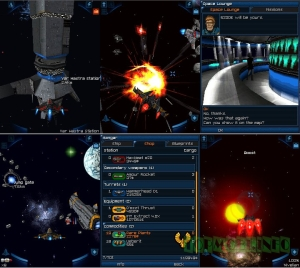

Galaxy On Fire II

Любители космических стрелок могут подготовиться к жесткой битвы в космосе: Fishlabs, ведущий разработчик высокотехнологичных мобильных 3D игр, дарит вторую часть стрелялки Galaxy on Fire.Как и в первой части одиссей вас ожидает потрясающая 3д графика. Великолепные эффекты, взрывы кораблей - все это вы увидите на экране вашего мобильника. Героем этой части игры как и предыдущей становиться Кейт Максвелл. Вам придется отправится вместе с ним в потрясающее космическое путешествие, в котором сможете выбрать одну из 30 космических аппаратов и оснастить их бесчисленными оружиями и снаряжениями.Приятные мелодии и звуковые эффекты, несомненно, дополняют игру. Взрывы других кораблей, свист снарядов - все это ждёт вас.
Jar на все икраны (1635кб)
Jad на все икраны
Назад